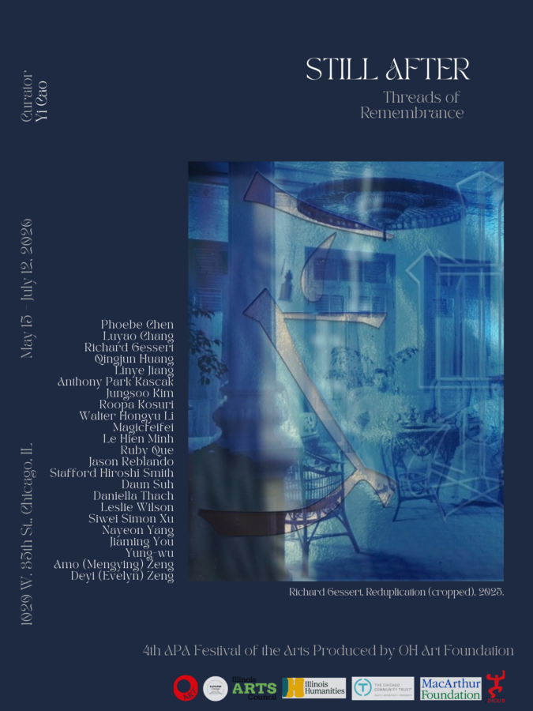

Still After: Threads of Remembrance
Still After brings together contemporary artists who understand memory not as a fixed archive, but as an embodied, recursive, and unfinished process. For diasporic and displaced subjects, remembrance is often a form of labor—painful and necessary, yet also rich with connection and discovery—moving through the body, materials, and acts of making.
Featuring 23 artists of diverse Asian and Asian diasporic backgrounds, Still After unfolds across painting, sculpture, video, photography, and installation. Together, the works trace interwoven familial and collective histories, where memory moves unevenly across generations, taking shape in fragments, gestures, and forms. They gather around a set of open questions:
How does a body absorb and negotiate the pressures of care, discipline, migration, and inheritance, where tenderness and violence, agency and constraint become difficult to separate?
What remains when a language is no longer fully one’s own—misremembered, untranslated, or held through pieces, songs, and gestures?
And what happens when histories surface through images, documents, and symbols that are partial, illegible, or shaped by other hands, when what is seen cannot fully account for what has been lived?
Moving between rupture and return, these practices do not resolve what they contain. Instead, they linger, reworking, reinhabiting, and gently insisting on what remains, what changes, and what continues to unfold.
Curator
Yi Cao is a curator and writer based in Chicago and Beijing. She develops curatorial projects that foster cross-cultural dialogue, exploring the dynamics of history, identity, and everyday life as they manifest in “global” Asia. She is Director of the Society for Contemporary Art at the Art Institute of Chicago.